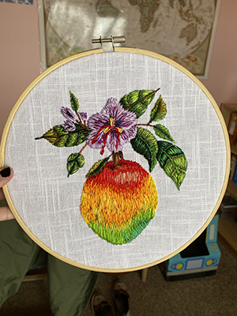

My latest project:
I recently took a thread painting class on Skillshare taught by the incredibly talented Danielle Clough. I've been an artist pretty much my whole life, but thread is my new favorite medium! There's something extra fun about creating a painting-like image using a medium that isn't necessarily fluid.
Here's the first piece (definitely won't be the last) I made after finishing the class.
These are a few of my favorite things...
I want to master the process of building web sites and increase my knowledge, skills and abilities in:
- HTML
- CSS
- JavaScript
- Pyton
- Ruby
I’d like to work for a web design firm helping clients create an impressive online presence.